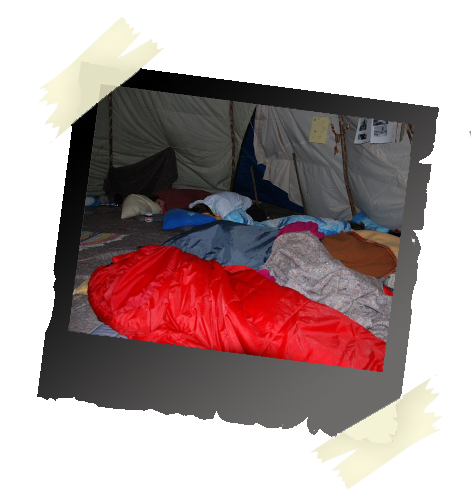

|
There are no translations available.
In das Wildnisleben eintauchen, Zeit am Lagerfeuer und unter freiem Himmel verbringen, wie die Indianer im Tipi übernachten, wer hat nicht schon davon geträumt.
Eingebettet in eine üppige und reichhaltige Natur bietet das anheimelnde Tipi Raum für Kreativität, Spiel, Abenteuer und Besinnlichkeit.
Tipis wurden seit jeher von Indianervölker gebaut und bewohnt.
Sie gelten als eine der vollkommensten Behausungen für das Leben in der Natur.
Sie haben eine fast kreisförmige Grundfläche und bestehen aus einem Gestell aus Stangen und einer Plane.
An der Vorderseite befindet sich über dem Eingang eine Rauchöffnung damit der Rauch aus dem Inneren abziehen kann.

Die Symbolik des Tipis
Die Grundfläche des Tipis ist ein Kreis.
Der Kreis gilt in der Indianerwelt als Metapher für den Kosmos und das Leben. Versammlungen und Beratungen finden im Kreis statt, der ausserdem auch ein Symbol für die Zusammengehörigkeit von Stamm und Familie ist.
• Mit einem Durchmesser von 6 Metern können bis zu 15 Personen in unserem Tipi übernachten.
• Ein Holzboden sowie ein zusätzliches Innenzelt schützen vor Nässe und Kälte.
• Auf dem Tipiplatz befinden sich eine Lagerfeuerstelle, eine Trockentoilette sowie eine weitere Hütte mit Kochgelegenheit und Geschirr.
• Das Tipi kann gemietet werden für Übernachtungen,Seminare,Geburtstage,gemütliche und unterhaltsame Abende.
• Unsere pädagogisch orientierten Aktivitäten finden zum Teil ebenfalls im Tipi statt.

|
")
")